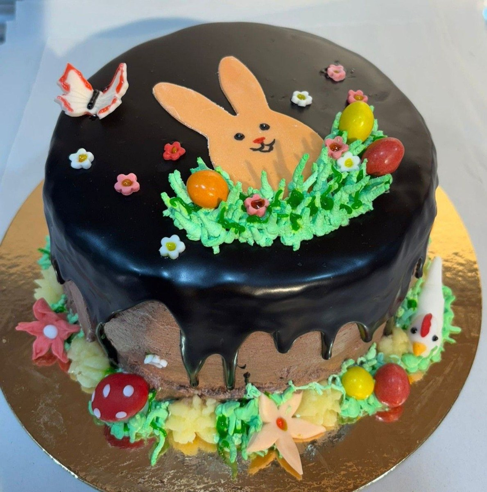
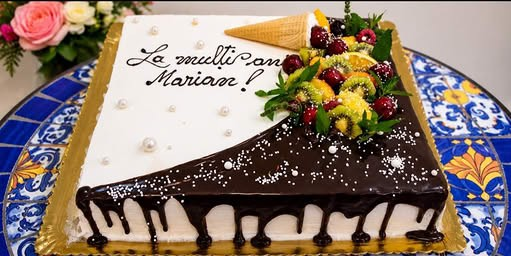
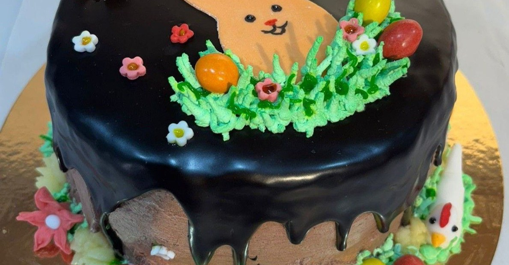
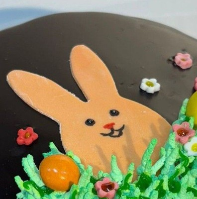
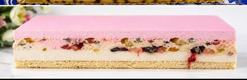

Torturi personalizate
Torturi lucrate pentru aniversări, botezuri și nunți — cu mesajul, forma și decorul pe care ți le dorești.
Torturi personalizate, prăjituri de casă și deserturi proaspete — pregătite zi de zi la Cofetaria Anotimp, pe Aleea Bradului din Slatina.


La Cofetaria Anotimp credem că un desert bun se simte după cum e făcut: cu ingrediente alese, cu răbdare și cu drag. De aceea fiecare tort și fiecare prăjitură pornesc de la rețete pregătite pas cu pas, în ritmul fiecărui anotimp.
Suntem în inima Slatinei, pe Aleea Bradului, și lucrăm mult la comandă — pentru zile de naștere, botezuri, aniversări sau, pur și simplu, pentru pofta de dulce a unei după-amiezi.
De la torturi de eveniment până la felia perfectă pentru o cafea de dimineață — găsești mereu ceva dulce pe placul tău.
Torturi lucrate pentru aniversări, botezuri și nunți — cu mesajul, forma și decorul pe care ți le dorești.
Felii fine cu creme fine și blaturi pufoase — deserturile clasice de cofetărie, pregătite proaspăt.
Creații care se schimbă odată cu anotimpurile — arome de primăvară, vară, toamnă și iarnă.

Câteva dintre creațiile ieșite din cofetăria noastră — fotografii reale, făcute la Slatina.


Scrie-ne pe Facebook sau treci pe la noi, pe Aleea Bradului. Spune-ne ocazia, numărul de porții și aroma preferată — restul îl facem noi.
Recomandăm o comandă din timp pentru torturile de eveniment, ca să pregătim totul pe îndelete.